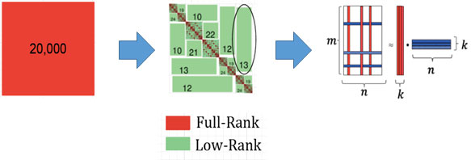
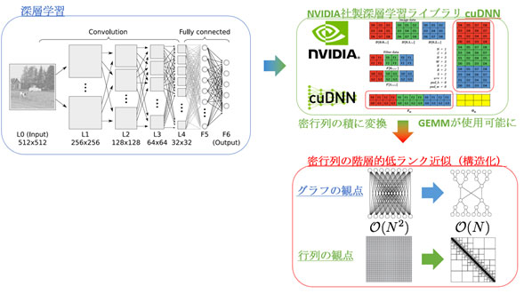

密行列の演算は境界積分法を用いた偏微分方程式の解法や統計学や機械学習における畳み込みの計算など様々な場面で用いられている。このような密行列はたいてい構造を有しており、その構造を利用することで階層的低ランク近似などによって圧縮することができる。これにより、密行列のメモリ消費量はO(N2)からO(N)へ低減され、行列積や行列分解の演算量もO(N3)からO(NlogpN)へと低減される。Nが大きい場合このような圧縮は非常に有効である。

図１ 密行列（赤）の階層的低ランク近似（緑）による圧縮
深層学習への応用
NVIDIAやGoogleの低精度演算用ハードウェアにみられるように深層学習は高い精度を必要としない。しかし、高い精度を必要としないはずの深層学習では今でも（近似を用いない）厳密な密行列積に計算時間の大部分に費やしている。それ自体がフルランクの密行列も、構造を抽出し、それに基づいた階層的なブロッキングを行うことで個々のブロックは低ランク行列を用いて近似することができる。これにより、O(N2)であった密行列のデータ量はO(N)になり、O(N3)であった密行列積の演算量はO(NlogpN)に低減される。

図１ 密行列（赤）の階層的低ランク近似（緑）による圧縮
MPI Parallelization of Low Rank Matrices
Introduction
Computing the LU decomposition of very large dense matrices (a few millions in dimension) is a very time-consuming task using traditional techniques like Gaussian elimination, which takes O(N3) time for reaching a solution. Approximating this dense matrix as a Hierarchical matrix can allow us to reduce the computation time to almost O(N) with an approximation error of about 98%.
Hierarchical Matrix
Hierarchical matrices consist of two kinds of matrix blocks - dense and low rank. The dense blocks are full rank matrix blocks that cannot be approximated without huge loss of information, and are therefore stored as-is in the matrix. The low rank blocks are off-diagonal blocks in the larger matrix that can be approximated using the SVD decomposition and maintain good enough accuracy for a well chosen rank.
Distributed Hierarchical Matrix
Large hierarchical matrices by themselves are very hard to fit on a single machine due to constrains of memory. Therefore, distributing them on multiple nodes and building a communication framework using MPI is very useful.
The distribution of the low rank blocks across processes determines how load balanced the final solution will be. We currently use a modified block cyclic distribution scheme where adjacent dense blocks are distributed on different processes whereas adjacent low rank blocks exist on the same process.
My current research area focuses on creating the most optimum distribution scheme for distributed hierarchical matrices such that the communication overhead for computing the LU decomposition is minimized.